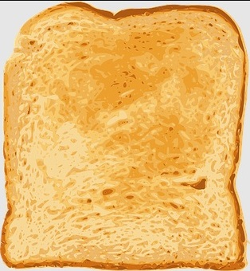
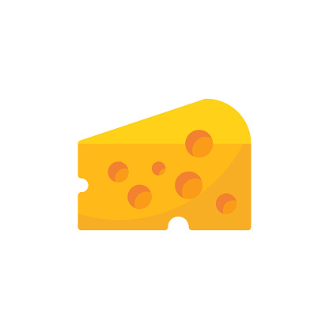
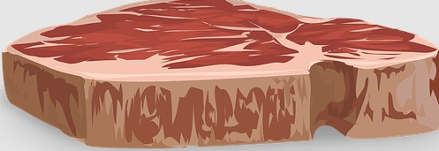
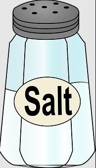
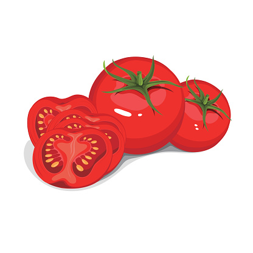

|  | Bread |
|  | Cheese |
|
Cream cheese |
|
Jalopino peppers |
|  | Meat |
|  | Salt |
|  | Tomato |
Step 1
Season tomatoes with sea salt and set aside.
Step 2
In a large cast-iron skillet over medium-high heat, place bacon in an even layer and cook until crisp,
about 3 minutes per side. Transfer to a paper towel-lined
Step 3
Spread each piece of bread with a thin layer of mayonnaise.
Reduce heat to medium. Place bread in cast iron skillet mayonnaise-side down.
Top with layers of gruyère on one half of the bread and provolone on other side.
Place sliced tomatoes and bacon on one side of the bread and cover skillet.
Step 4
When cheese has begun to melt, top the tomatoes and bacon with another bread slice, mayonnaise-side up.
Flip occasionally until both sides are golden brown. Serve immediately.